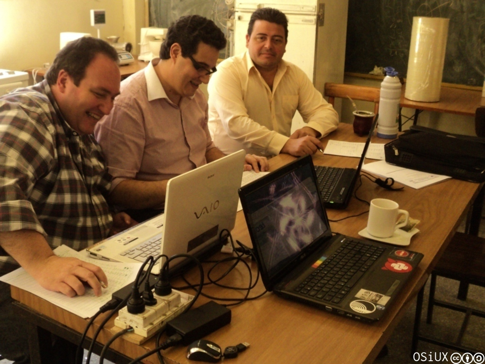
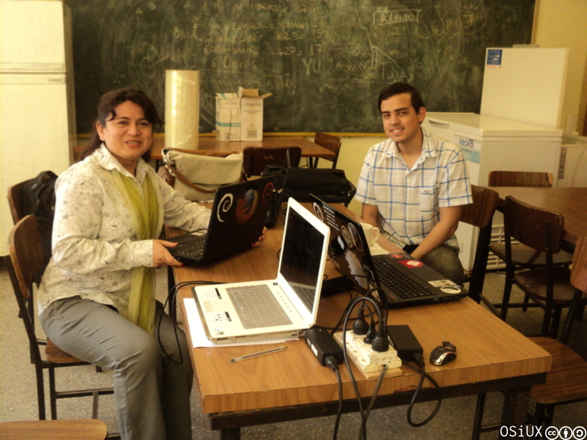
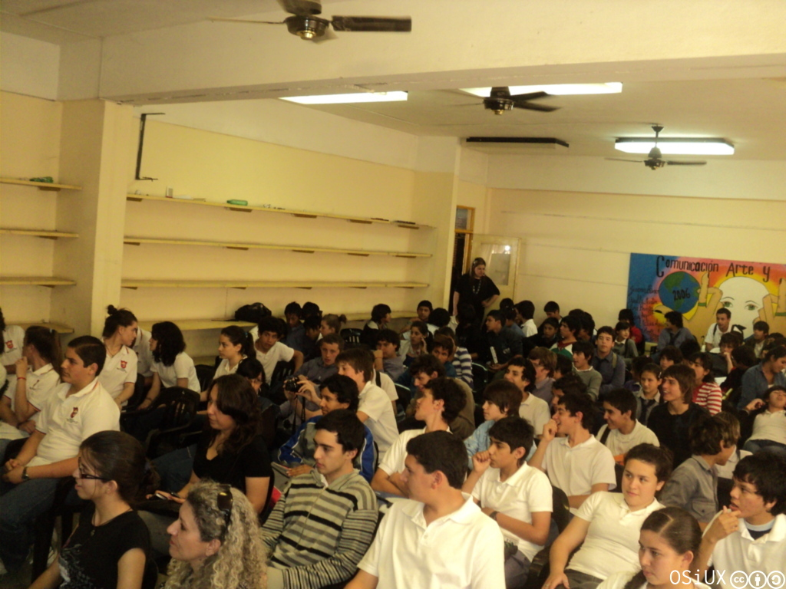
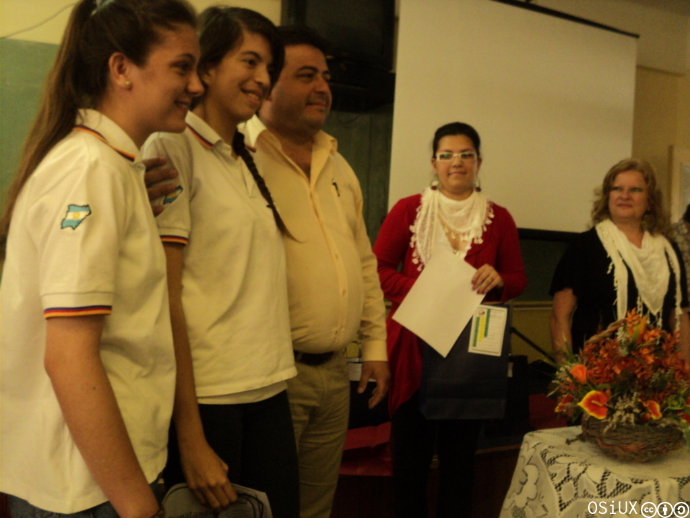
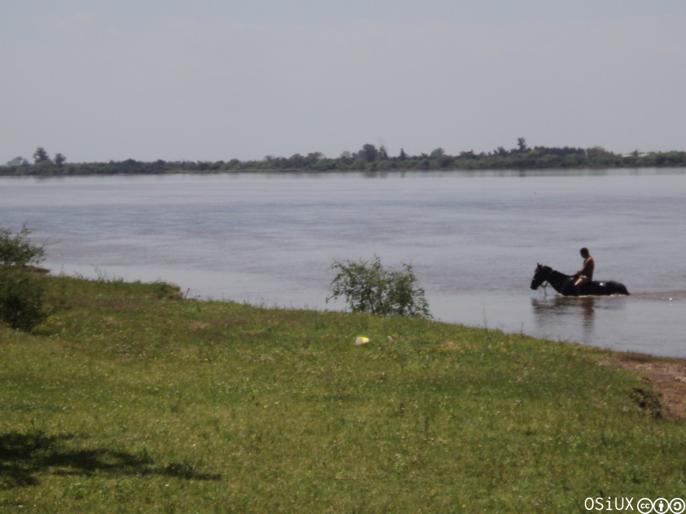
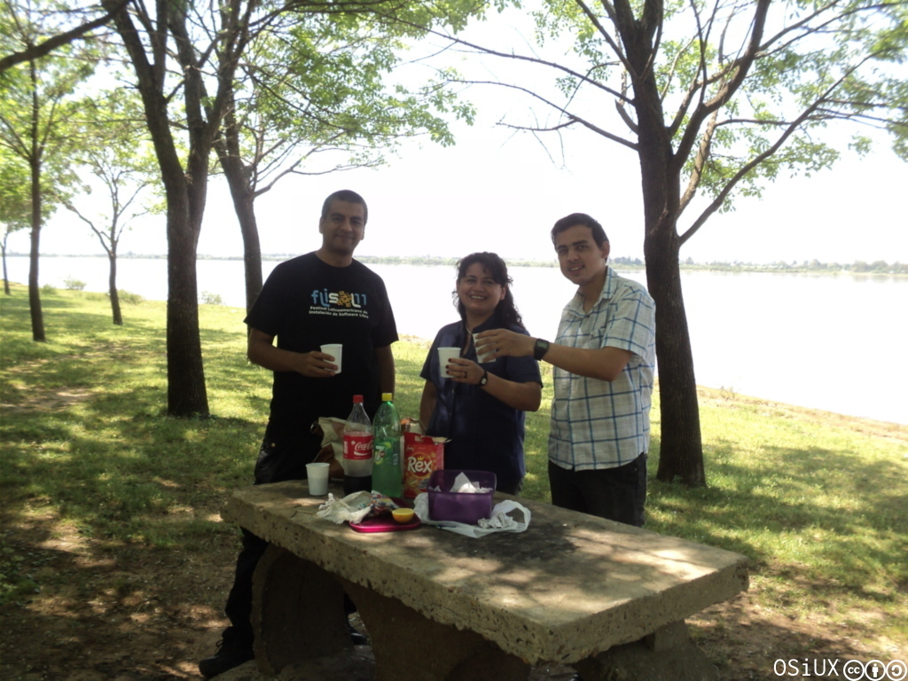
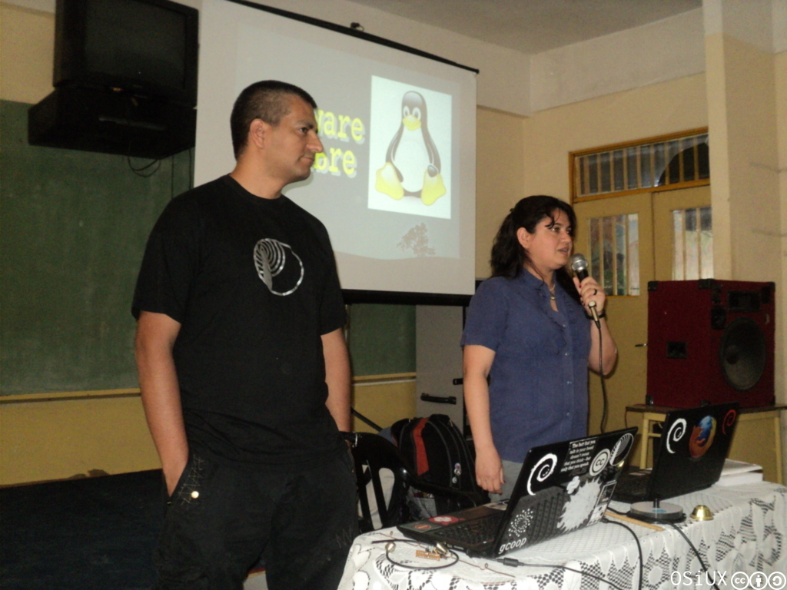
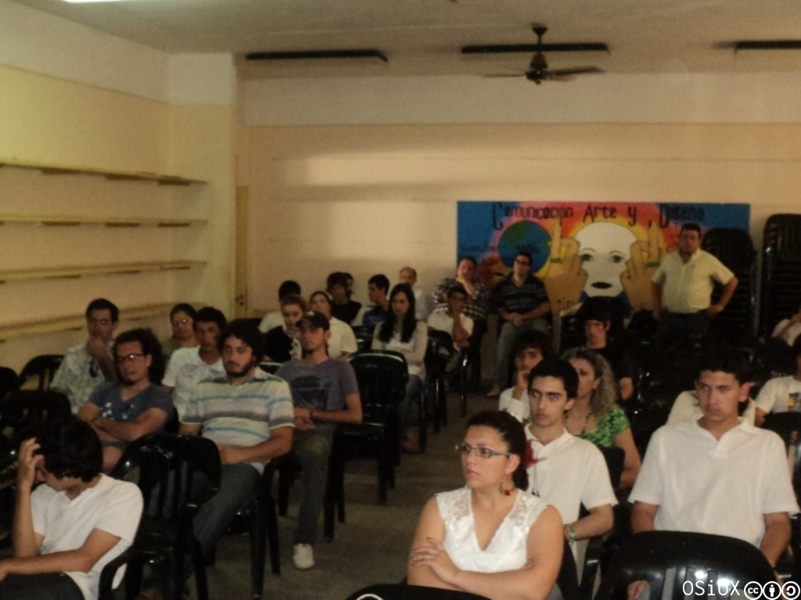
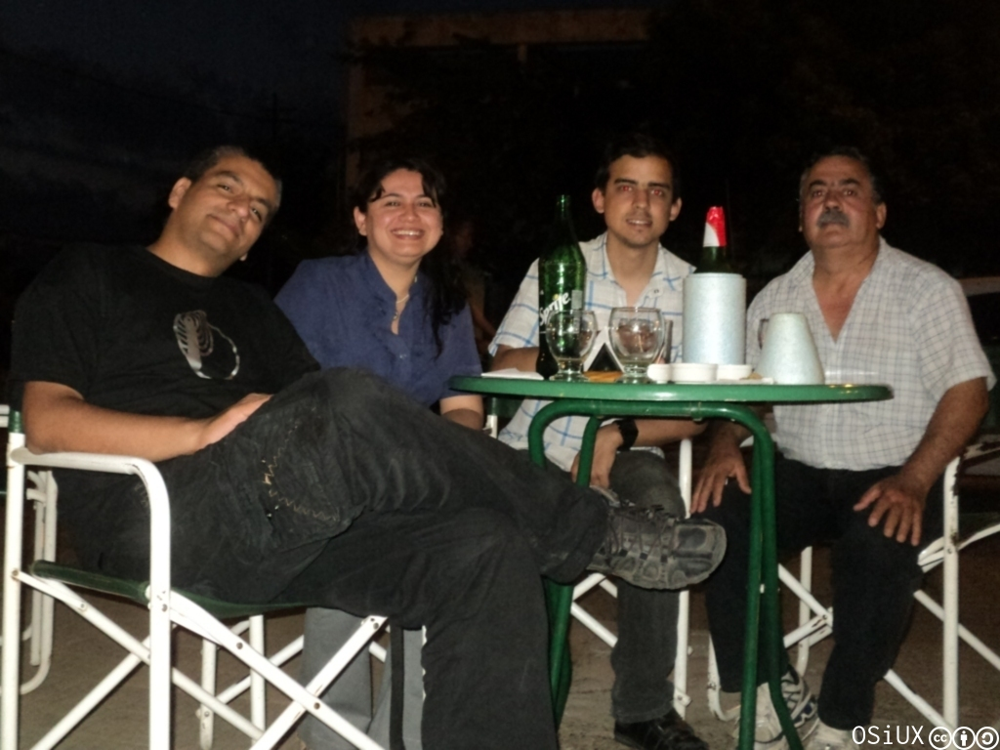

Software Libre en las Olimpíadas Informáticas de Monte Caseros
index | OSiUX | blog | docs | charlas | rss
Las olimpíadas




El viernes 21 junto a Liliana Arbelo estuve en la ciudad de Monte Caseros (Provincia de Corrientes) dando una serie de charlas como cierre de la Primera Olimpíada Interescolar Informática de Nivel Secundario y la Primera Olimpíada de Informática Escolar en el Nivel Programación.
Ni bien llegué a la *Escuela Técnica "Pedro Ferré"* fui bien recibido por los docentes, nos acomodamos en la cocina y mientras ellos terminaban de calificar los últimos exámenes del evento, yo me dediqué a terminar una serie de slides para la charla de Introducción a las redes.
Más tarde se realizó la entrega de diplomas y premios a los concursantes, fue curioso ver que hubo un par de chicos y chicas que se llevaron más de un premio, por lo visto hay mucho entusiasmo en aprender.
El río
Para el mediodía nos fuimos a almorzar a la costa del Río Uruguay, un lugar muy fresco y placentero. Daban ganas de quedarse y meterse al río, también de atacar el corderito que estaban haciendo los vecinos del camping, aunque nos contentamos con unos sabrosos sanguichitos de mila.


Las charlas



Introducción al software libre
Liliana abrió la jornada de charlas con una interesante introducción al software libre, hablando sobre las aplicaciones disponibles, las libertades y cerrando con un video explicativo.
Cooperativismo y software libre
Aproveché la oportunidad para difundir cooperativismo, como el resto de los socios de gcoop 1 intentamos mostrar que existe otra manera de trabajar de la misma manera que existe otro software para usar, modificar y distribuir libremente, para esto usé los slides de José Carlos Massón:
Introducción a las redes
Redes Libres
La intro sobre redes dio pié a hablar sobre la ventajas de las redes libres 4, básicamente permiten hacer uso del tendido de cables y/o enlaces inalámbricos en una ciudad sin necesidad de usar internet, salvo cuando realmente es necesario salir de los límites geográficos de la cuidad para compartir archivos y/o establecer comunicaciones.
No tuve tiempo de hacer nuevos slides y terminé usando la presentación de las Terceras Jornadas Regionales de Redes Libres 5
El cierre
Finalmente los asistentes mostraron mucho interés y terminé grabando pendrives con ubuntu 11.10 y copiando el libro Redes Inalámbricas para Países en Desarrollo 6.
La jornada terminó con una merecida cerveza helada en el centro de la ciudad, para luego viajar hasta Curuzú Cuatiá donde al día siguiente logramos instalar ubuntu 11.10 en exomate de conectar igualdad:
Conclusión
La Comunidad de Software Libre debe participar más en las escuelas y colegios del país, no basta con realizar un tutorial o hacer un programa y publicarlo, es necesario viajar ahí donde hay poco conocimiento y experiencia sobre el tema, hoy tenemos una oportunidad única, el Programa Conectar Igualdad 7 entregó millones de notebooks con GNU/Linux y podemos ayudar a que millones de chicos y chicas del todo el país aprovechen al máximo todo el software libre existente compartiendo el espíritu de compartir el conocimiento.